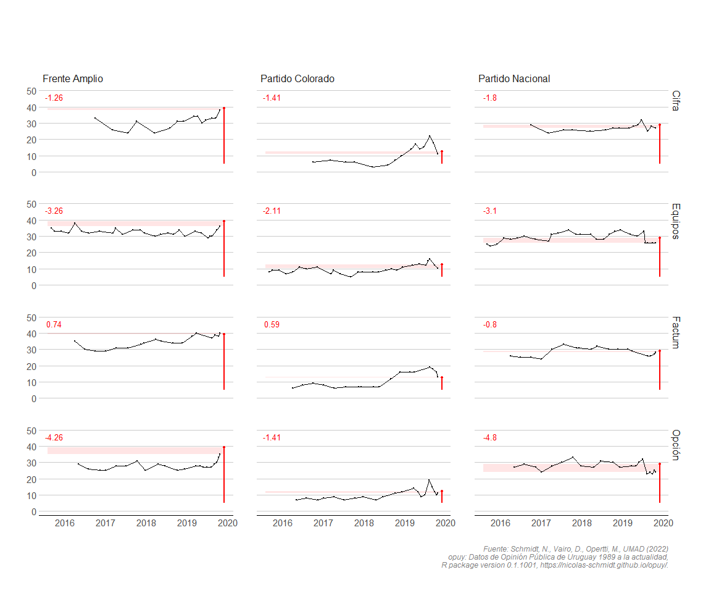

Nicolás Schmidt, Daniela Vairo, Martín Opertti, UMAD1.
Datos de opinón pública de Uruguay de 1989 hasta la actualidad.
Descripción
Provee un conjunto de datos de opinión publica en Uruguay para el periodo que va desde 1989 hasta la actualidad de dos indicadores relevante para el estudio de la realidad política del país: intención de voto y evaluación de gestión del presidente.
El manual del paquete se puede encontrar aquí.
Instalación
remotes::install_github("Nicolas-Schmidt/opuy")Contenido del paquete
Funciones
| Nombre | Descripción |
|---|---|
resumen_opuy |
Resumen de los indicadores que contiene la base de datos por consultora y por año. Esta función tiene asociado su propio método de print() y summary(). |
Conjuntos de datos
| Nombre | Descripción |
|---|---|
opuy |
Conjunto de datos que contiene dos indicadores de opinión pública relevante para trabajar con datos políticos para el período 1989 hasta la actualdiad: Intención de voto y Evaluación de la gestión del Presidente. Los valores para ambos indicadores son agregados ya que no se cuenta con los microdatos. |
Ejemplo
## Conjunto de datos: 'opuy'
library(opuy)
summary(resumen_opuy())
#> # A tibble: 12 × 6
#> Empresa Indicador Mediciones Periodo Anios Ratio
#> <chr> <chr> <int> <chr> <dbl> <dbl>
#> 1 Equipos Evaluacion de gestion presidente 190 1990-20… 32 6
#> 2 Cifra Evaluacion de gestion presidente 52 2000-20… 23 2
#> 3 Opcion Evaluacion de gestion presidente 30 2014-20… 9 3
#> 4 Factum Evaluacion de gestion presidente 27 2000-20… 21 1
#> 5 Interconsult Evaluacion de gestion presidente 15 2005-20… 5 3
#> 6 Radar Evaluacion de gestion presidente 3 2005-20… 7 0
#> 7 Factum Intencion de voto 149 1993-20… 26 6
#> 8 Equipos Intencion de voto 114 1989-20… 30 4
#> 9 Cifra Intencion de voto 90 1993-20… 26 3
#> 10 Radar Intencion de voto 69 1998-20… 21 3
#> 11 Interconsult Intencion de voto 64 1998-20… 19 3
#> 12 Opcion Intencion de voto 29 2014-20… 5 6
resumen_opuy(polling.org = c("Equipos", "Cifra", "Factum", "Opcion"))
#>
#>
#> ---- Resumen de Indicadores por anio y consultora ---------------------------
#>
#>
#> Equipos Cifra Factum Opcion
#> ----- --------------- --------------- --------------- ---------------
#> 1989 IV (06)| - - | - - | - - | -
#> 1990 IV (01)|EG (02) - | - - | - - | -
#> 1991 IV (02)|EG (02) - | - - | - - | -
#> 1992 IV (02)|EG (03) - | - - | - - | -
#> 1993 IV (06)|EG (06) IV (08)| - IV (03)| - - | -
#> 1994 IV (11)|EG (12) IV (11)| - IV (12)| - - | -
#> 1995 - |EG (08) - | - IV (01)| - - | -
#> 1996 - |EG (12) - | - IV (03)| - - | -
#> 1997 IV (01)|EG (12) - | - IV (08)| - - | -
#> 1998 IV (01)|EG (12) - | - IV (13)| - - | -
#> 1999 IV (09)|EG (06) IV (07)| - IV (16)| - - | -
#> 2000 - |EG (03) - |EG (02) IV (01)|EG (07) - | -
#> 2001 - |EG (04) - | - IV (03)|EG (07) - | -
#> 2002 IV (01)|EG (04) - | - IV (03)|EG (01) - | -
#> 2003 - |EG (04) IV (03)| - IV (03)| - - | -
#> 2004 IV (07)|EG (04) IV (10)| - IV (15)| - - | -
#> 2005 - |EG (05) - |EG (02) - | - - | -
#> 2006 - |EG (06) - | - - |EG (02) - | -
#> 2007 - |EG (06) - | - IV (02)| - - | -
#> 2008 IV (01)|EG (06) IV (03)|EG (01) IV (04)| - - | -
#> 2009 IV (10)|EG (05) IV (11)| - IV (11)| - - | -
#> 2010 IV (03)|EG (06) - |EG (02) IV (02)|EG (01) - | -
#> 2011 IV (06)|EG (02) IV (01)|EG (04) IV (04)| - - | -
#> 2012 IV (03)|EG (04) IV (04)|EG (06) IV (04)| - - | -
#> 2013 IV (02)|EG (04) IV (06)|EG (03) IV (05)| - - | -
#> 2014 IV (11)|EG (05) IV (10)|EG (05) IV (14)| - IV (06)|EG (02)
#> 2015 IV (03)|EG (06) - |EG (02) - |EG (03) - |EG (01)
#> 2016 IV (05)|EG (05) IV (01)|EG (03) IV (04)|EG (03) IV (03)|EG (05)
#> 2017 IV (06)|EG (03) IV (03)|EG (03) IV (04)|EG (01) IV (05)|EG (04)
#> 2018 IV (06)|EG (04) IV (04)|EG (04) IV (04)| - IV (04)|EG (04)
#> 2019 IV (11)|EG (01) IV (08)|EG (02) IV (10)| - IV (11)|EG (03)
#> 2020 - |EG (07) - |EG (03) - | - - |EG (02)
#> 2021 - |EG (12) - |EG (05) - |EG (02) - |EG (04)
#> 2022 - |EG (09) - |EG (04) - | - - |EG (04)
#> 2023 - | - - |EG (01) - | - - |EG (01)
#>
#>
#> IV: Intencion de Voto
#> EG: Evaluacion de gestion
#>
#> Entre parentesis se indica la cantidad de mediciones.
#>
#> -----------------------------------------------------------------------------Intención de voto para elecciones nacionales medidas en 2019 por todas las consultoras
library(tidyverse)
data(opuy)
opuy %>%
filter(medicion == 'Intencion de voto',
tipo_eleccion == 'Nacional',
anio_medicion == 2019,
sigla %in% c('FA', 'PC', 'PN', 'CA')) %>%
mutate(partido = factor(partido, levels = c('Frente Amplio', 'Partido Colorado',
'Partido Nacional', 'Cabildo Abierto'))) %>%
ggplot(aes(x = fecha, y = valor, color = empresa)) +
geom_line(aes(group = empresa), size = 1, alpha = 0.6) +
geom_point(size = 1.5) +
facet_wrap(~partido, nrow = 1) +
hrbrthemes::theme_ipsum_tw(grid = "XY", axis = "xy") +
labs(x = "",
y = "Porcentaje de votos %",
color = "",
title = "Intención de voto en elecciones nacionales 2019",
subtitle = '27 de octubre de 2019 \nMediciones del año 2019',
caption = 'Fuente: opuy (Schmidt et al. 2022)')
Intención de voto para elecciones nacionales de todas las consultoras para todo el período de medición de la elección de 2019 (2016 - 2019)
Resumen intención de voto 2019 de los principales partidos para toda la serie correspondiente a la elección nacional de 2019 (2016 - 2019)
| Partido | Valor Mínimo | Valor Máximo | Valor Mínimo 2019 | Valor Máximo 2019 | Votación real |
|---|---|---|---|---|---|
| Frente Amplio | 24% | 43% | 27% | 43% | 39.25% |
| Partido Nacional | 21.6% | 34% | 21.6% | 33% | 28.79% |
| Partido Colorado | 3% | 22% | 9% | 22% | 12.41% |
| Cabildo Abierto | 1% | 12% | 1% | 12% | NA% |
Evaluación de la gestión del presidente
opuy %>%
filter(medicion == 'Evaluacion de gestion presidente',
categoria_unificada == 3) %>%
select(anio_gobierno, empresa, valor, presidente) %>%
group_by(empresa, anio_gobierno, presidente) %>%
summarise(promedio = mean(valor, na.rm = TRUE)) %>%
ungroup() %>%
mutate(presidente = factor(presidente, levels = c("Lacalle", "Sanguinetti 2",
"Batlle", "Vazquez 1", "Mujica",
"Vazquez 2", "Lacalle Pou"))) %>%
ggplot(aes(x = factor(anio_gobierno), y = promedio, color = empresa)) +
geom_line(aes(group = empresa), size = 1, alpha = 0.6) +
geom_point(size = 1.5) +
facet_wrap(~presidente, nrow = 1) +
hrbrthemes::theme_ipsum_tw(grid = "XY", axis = "xy") +
labs(x = "Año de gobierno",
y = "Porcentaje de aprobación",
color = "",
title = "Evaluacion de la gestión del presidente",
subtitle = 'Serie histórica con datos de todas las consultoras (promedios anuales)',
caption = 'Fuente: opuy (Schmidt et al. 2022)')
Uso combinado del paquete opuy con Boreluy (paquete de R de datos electorales de Uruguay)
La paleta grafica que se presenta contiene los datos de cuatro consultores sobre intención de voto de cara a la elección de octubre de 2019. La recta y el punto rojo indica el resultado que cada partido obtuvo en la elección. La franja roja horizontal se conforma con los puntos de la última intención de voto de cada consultora y el resultado de la elección. El número rojo arriba a la izquierda de cada grafico indica le distancia de la última estimación con el resultado de la elección.

üìë Citar
Para citar el uso de los datos o del paquete opuy en publicaciones use:
Schmidt, Nicolás, Vairo, Daniela, Opertti, Martín , UMAD (2022) opuy: Datos de Opinión Pública de Uruguay 1989 a la actualidad, R package version 0.1.1001, https://nicolas-schmidt.github.io/opuy/.
Mantenedor
Nicolás Schmidt (nschmidt@cienciassociales.edu.uy)
Notas
1 Unidad de Métodos y Acceso a Datos, Facultad de Ciencias Sociales, Universidad de la República (UMAD-FCS-UdelaR)